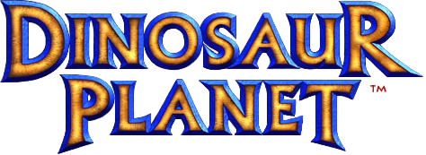
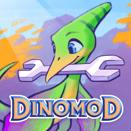

RECOMPILED
Features
#Download
#Download the latest version of Dinosaur Planet: Recompiled below.
It is highly recommended to also install the mod Dinomod Enhanced before playing!
How do I install mods?
Dinomod Enhanced
#
Full support for the community patches and enhancements are provided by the mod Dinomod Enhanced. It is highly recommended to install this mod before playing.
Why is this mod required?
The only publicly available version of Dinosaur Planet is an unfinished prototype that is very broken. It is not possible to progress beyond the first couple acts of the game without some kind of patch. Additionally, there is a lot of content inside the ROM that is otherwise inaccessible/incomplete even if you got to the location it's supposed to be playable at. Dinomod Enhanced is a mature long-term project built by many contributors that exists to fix these bugs, make progression possible, and restore as much content as possible so that the full game (as it exists) can be experienced.
Playing this port without Dinomod is possible if you want to experience the vanilla ROM but you will be missing out on the vast majority of the game and crashes are expected.
FAQ
#Where can I obtain a ROM?
#Dinosaur Planet: Recompiled requires you to provide your own copy of the December 2000 prototype ROM. As this game was never released, there is no way to legitimately obtain a copy. However, the release by Forest of Illusion is available on archive.org.
How do I install mods?
#Mods can be installed by first launching the recomp and then either:
- Drag and drop the mod file(s) (usually a .zip file) onto the window.
- Or, click Mods, then Install Mods, and then select the mod file(s) to install.
Where can I find more mods?
#Additional mods can be found on our Thunderstore community page! Anyone is free to upload their own mods here to share with the community. Please only install mods from authors you trust!
Where is the savefile located?
#
- Windows:
%LOCALAPPDATA%\DinoPlanetRecompiled\saves
- Linux:
~/.config/DinoPlanetRecompiled/saves
How does the recomp differ from the vanilla experience?
#Dinosaur Planet: Recompiled aims to patch as little as possible out of the box while still providing recomp-specific enhancements. The full list of changes can be found here. Please note that these changes are mostly technical and do not generally effect gameplay.
I have other questions!
#Additional information can be found in the project's README. If your question is not listed or you would like to join the community, consider joining the community Discord!